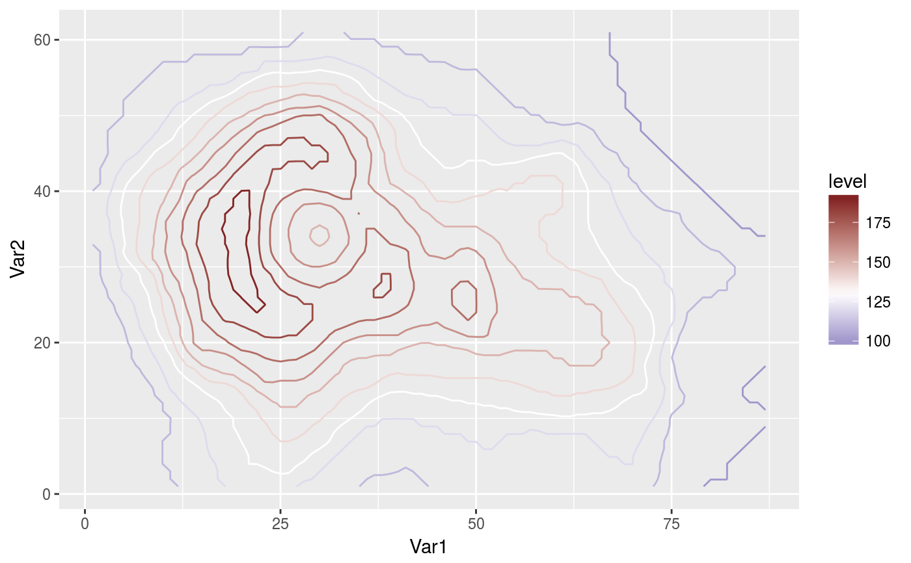

Wrapper around ggplot's scale_colour_gradient2 with
inverted defaults of high and low.
scale_color_divergent(..., low = scales::muted("blue"), mid = "white",
high = scales::muted("red"), midpoint = 0, space = "Lab",
na.value = "grey50", guide = "colourbar")
scale_fill_divergent(..., low = scales::muted("blue"), mid = "white",
high = scales::muted("red"), midpoint = 0, space = "Lab",
na.value = "grey50", guide = "colourbar")
Arguments
| ... |
Arguments passed on to continuous_scale
- aesthetics
The names of the aesthetics that this scale works with - scale_name
The name of the scale - palette
A palette function that when called with a single integer
argument (the number of levels in the scale) returns the values that
they should take - name
The name of the scale. Used as axis or legend title. If
waiver(), the default, the name of the scale is taken from the first
mapping used for that aesthetic. If NULL, the legend title will be
omitted. - breaks
One of:
NULL for no breaks
waiver() for the default breaks computed by the
transformation object
A numeric vector of positions A function that takes the limits as input and returns breaks
as output - minor_breaks
One of:
NULL for no minor breaks
waiver() for the default breaks (one minor break between
each major break)
A numeric vector of positions A function that given the limits returns a vector of minor breaks. - labels
One of:
NULL for no labels
waiver() for the default labels computed by the
transformation object
A character vector giving labels (must be same length as breaks) A function that takes the breaks as input and returns labels
as output - limits
A numeric vector of length two providing limits of the scale.
Use NA to refer to the existing minimum or maximum. - rescaler
Used by diverging and n colour gradients
(i.e. scale_colour_gradient2(), scale_colour_gradientn()).
A function used to scale the input values to the range \([0, 1]\). - oob
Function that handles limits outside of the scale limits
(out of bounds). The default replaces out of bounds values with NA. - trans
Either the name of a transformation object, or the
object itself. Built-in transformations include "asn", "atanh",
"boxcox", "exp", "identity", "log", "log10", "log1p", "log2",
"logit", "probability", "probit", "reciprocal", "reverse" and "sqrt".
A transformation object bundles together a transform, it's inverse,
and methods for generating breaks and labels. Transformation objects
are defined in the scales package, and are called name_trans, e.g.
scales::boxcox_trans(). You can create your own
transformation with scales::trans_new(). - position
The position of the axis. "left" or "right" for vertical
scales, "top" or "bottom" for horizontal scales - super
The super class to use for the constructed scale - expand
Vector of range expansion constants used to add some
padding around the data, to ensure that they are placed some distance
away from the axes. Use the convenience function expand_scale()
to generate the values for the expand argument. The defaults are to
expand the scale by 5% on each side for continuous variables, and by
0.6 units on each side for discrete variables. |
| low |
Colours for low and high ends of the gradient. |
| mid |
colour for mid point |
| high |
Colours for low and high ends of the gradient. |
| midpoint |
The midpoint (in data value) of the diverging scale.
Defaults to 0. |
| space |
colour space in which to calculate gradient. Must be "Lab" -
other values are deprecated. |
| na.value |
Colour to use for missing values |
| guide |
Type of legend. Use "colourbar" for continuous
colour bar, or "legend" for discrete colour legend. |
See also
Other ggplot2 helpers: DivideTimeseries,
MakeBreaks, WrapCircular,
geom_arrow, geom_contour2,
geom_contour_fill,
geom_label_contour,
geom_relief, geom_streamline,
geom_vector,
guide_colourstrip,
map_labels, reverselog_trans,
scale_longitude, stat_na,
stat_subset
Examples
